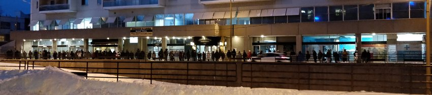

A look at the interborough travel patterns of residents.
lisa altman // bradley minielly // jeremy steele // anders turim

The Montreal area is exceedingly diverse, with a variety of distinct boroughs, neighbourhoods, and towns that have something for everyone. Montrealers know that before you can play hard, you need to work hard. For both work and play, people living here often find that they need to travel away from their own neighbourhoods. These daily travels, both within the Island of Montreal and from Laval and the North and South Shores, gathered from the 2013 origin-destination survey, tell a story full of both surprises and non-surprises.
Those of higher socioeconomic status nearer to downtown, such as Westmount, generally have better access to public transit, yet the data shows that they use it less, probably because they would rather show off their fancy cars than be packed into a train with the masses. Conversely, those of low socioeconomic status tend to travel using transit regardless of the travel distance or lack of transit accessibility in their areas. This is most clearly seen around the boroughs of Villeray-Saint-Michel-Parc-Extension and Mercier-Hochelaga-Maisonneuve. An explanation could be that populations in these areas do not necessarily have the means to travel day to day by car.
For an example of this, notice the percentage of trips on transit from Villeray-Saint-Michel-Parc-Extension to Sud-Ouest.
Daily travel between Montreal Boroughs, 2013
Hover over a borough to see outgoing travel patterns.
Click to display detailed travel graph below.
Darker borough color = higher % trips by transit.
Circle size = total trips leaving borough.
Thicker line = higher volume of trips.
Given that a much larger proportion of travellers going to and from areas that are typically of a lower socioeconomic class are travelling by public transit, the fact that these are the areas where transit is least accessible is clearly a massive problem. Public transport should be located closer to people who need it and use it. Accessibility to transport should be maximized for those of lower socioeconomic status, and not be wasted on those who will opt for the use of their car. There is little intra-borough transit use. People must be walking or biking these shorter distances.
Like in every city, daily travel from every borough to downtown is common and consistent. It's also heavily transit-based, even for the West Island suburbs. Commutes to downtown and the central business district are the highest in volume from the Plateau, Laval, North Shore, Longueuil, and South Shore. Interestingly, people who live downtown seem to commute almost equally to the surrounding boroughs. It is not surprising that people living on either end of the island seem to travel the furthest distances most frequently.
The visualization of this dataset helps inform us of any changes that may need to be made to Montreal’s transit system, to optimally serve the travel needs of its users.